1. Définition d'un OS
- Programme assurant la gestion de l'ordinateur et de ses périphériques
- Ensemble central de programmes qui sert d'interface entre le matériel d'un ordinateur et les logiciels applicatifs
Le SE doit permettre
- L'intéraction avec des utilisateurs et l'exécution de leurs ordres dans la limite de leurs privilèges
- La protection de l'information: contre lecture/écriture non autorisée (confidentialité des données)
- La protection du matériel
- L'accès aux ressources et à l'information doit s'effectuer sous un contrôle strict du système
2. Structure d'un ordinateur
- Le processeur (ou CPU: Central Processing Unit) : C’est la puce électronique physique principale (le matériel) clipsée sur la carte mère. Il joue le rôle de grand patron de l'ordinateur en exécutant en boucle le cycle à très haute vitesse Fetch-Decode-Execute. Il englobe plusieurs sous-composants essentiels : l'UC (le chef d'orchestre), l'UAL (le calculateur), les registres (la mémoire ultra-rapide interne) et la MMU (le traducteur d'adresses).
- UC (Unit of Control / Unité de Contrôle)C'est le centre de commandement logé à l'intérieur du processeur. Elle agit comme le chef d'orchestre du cycle d'exécution. C'est elle qui va chercher l'instruction machine suivante en mémoire (Fetch), l'analyse pour comprendre ce qu'il faut faire (Decode) et pilote les autres circuits matériels (comme l'UAL ou les bus système) pour effectuer l'action (Execute). Elle ne fait aucun calcul mathématique elle-même, elle donne les ordres.
- Le Noyau (ou Kernel)C'est le cœur logiciel du Système d'Exploitation (OS), chargé en premier en RAM au démarrage et doté des privilèges absolus (mode Superviseur). C'est le gestionnaire suprême des ressources. Il sert d'intermédiaire invisible entre tes programmes et le matériel (CPU, RAM, Disque). C'est lui qui gère la table des processus pour l'ordonnancement, la table des régions pour le partage de mémoire, et qui intervient lors des Page Faults pour transférer les données entre la RAM et le swap.
- Chipset : chef d'orchestre (jeu de puces) de la carte mère. Ensemble de circuits intégrés dont le rôle est de coordonner et gérer les échanges de données entre la CPU et les autres composants de l'ordinateur (RAM, carte graphique, DD, USB, etc..)
- Northbridge : n'existe plus. Gérait les composants ultra-rapides comme la RAM et la carte graphique
- Southbridge : renommé aujourd'hui. Chipset qui gère les E/S lentes de la carte mère
- DDR2 : DDR2 SDRAM - Double data rate synchronous dynamic random access memory
- DMI : Direct media interface, pont entre le Northbridge et le Southbridge
- PCIe : Peripheral component interconnect express
- EFI Boot ROM : puce de mémoire flash contenant le micrologiciel/BIOS de la machine
- SPI : Serial peripheral interface. Lien entre le Southbridge et la puce EFI Boot ROM
- EFI : Extensible firmware interface. Programme de démarrage de la machine. Remplace le BIOS depuis 2020.
- HDD : Hard Disk Drive. Il utilisait le port parallèle ATA pour communiquer avec le Southbridge. Vitesse : 100 Mo/s
- SSD : Solid State Drive. Grosse clé USB. Stocke sur des puces de mémoire flash. Vitesse : 550 Mo/s à 7 000 Mo/s
- ATA : Advanced technology attachment. Remplacé par SATA (serial ATA).

3. Schéma simplifié d'un ordinateur (architecture Von Neumann)
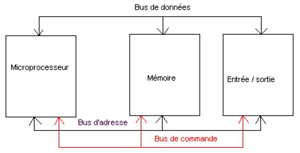
Les composants
- Microprocesseur (CPU) : C'est le cerveau. Il exécute les instructions des programmes et orchestre tout le système. Effectue les calculs et dirige les transferts d'information (données, instruction)
- Mémoire : Mémoire vive RAM -> Random access (accès aléatoire) signifie que le CPU peut accéder à n'importe quelle partie de la zone mémoire directement et en un temps unique, contrairement au DD où l'accès est séquentiel, il faut dérouler un plateau. C'est la planche de travail de la CPU : Elle stocke les données et les programmes en cours d'exécution pour que le CPU y accède rapidement.
- Entrée/Sortie : L'interface avec le monde extérieur (clavier, souris, écran, disque dur) pour recevoir ou envoyer des données.
Les 3 types de bus
- Bus de données : Transporte le contenu réel (les bits d'un fichier, une variable de code, une image) entre les trois blocs.
- Bus d'adresse : Indique où envoyer ou récupérer l'information (ex: "Je veux lire la case mémoire n°1024").
- Bus de commande : Transmet les ordres de contrôle et de synchronisation (ex: "C'est une opération de Lecture" ou "C'est une opération d'Écriture").
4. Notions fondamentales
- Processus : exécution d'un programme
- Ressource : toute entité nécessaire à la progression d'un processus
Types de ressources
- Matérielle : L'UC, RAM, périphérique, disque dur
- Logicielle : Les données, le code (les instructions), fichiers, sémaphore, socket réseau...
Types d'accès aux ressources: partagé ou exclusif
Par exemple si deux processus envoient des données à l'imprimante en même temps, les caractères seront mélangés. La notion d'exclusivité est nécessaire ici.
Temps partagé
Le temps partagé (time-sharing) est une technique de l'OS pour donner l'illusion du parallélisme (appelé pseudo-parallélisme) sur un seul cœur de processeur.
- Le principe : Le processeur n'exécute pas les processus en même temps, mais les uns après les autres à toute vitesse.
- Le Quantum de temps : L'OS attribue à chaque processus un temps de parole très court (quelques millisecondes), appelé quantum.
- La rotation (Commutation de contexte) : Dès que le temps d'un processus est écoulé, l'OS le suspend, sauvegarde son état, et passe au processus suivant.
5. Architecture (simplifiée) d'un OS
L'architecture d'un système d'exploitation est structurée en couches indépendantes. Plus on monte, plus on est proche de l'utilisateur. Plus on descend, plus on se rapproche du matériel.
Les différentes couches (de haut en bas) --> L'OS s'étend sur les 3 couches intermédiaires
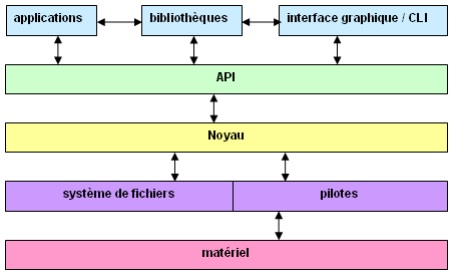
- Applications & Interfaces : Programmes de niveau utilisateur (compilateurs, navigateur, éditeur de texte). L'interaction se fait via une Interface graphique (GUI) (système de multifenêtrage) ou une CLI (Command-line interface) constituée d'un interpréteur de commandes (shell).
- Bibliothèques : Regroupent des fonctions/procédures ou variables prédéfinies compilées selon une thématique commune (ex : bibliothèque des fonctions mathématiques) pour faciliter le développement.
- API (Application Programming Interface) : Point de contact qui gère les appels système ou les primitives système pour faire le pont de manière sécurisée avec le noyau.
- Noyau (Kernel ou "système") : C'est le cœur du SE et le sujet principal du cours. Il coordonne les processus et gère l'allocation des ressources.
- Système de fichiers & Pilotes :
- Système de fichiers : Une présentation logique de l'information enregistrée sous forme de fichiers situés sur les périphériques matériels.
- Pilotes (Drivers) : Traducteurs matériels pouvant faire partie du noyau de façon statique (édition des liens) ou dynamique (chargement sous forme de modules).
- Matériel (Hardware) : Les composants physiques (processeur, mémoire, périphériques).
6. Types de noyaux selon leur organisation
| Type de noyau | Description | Avantages | Inconvénients | Exemples |
|---|---|---|---|---|
| Monolithique | Un seul bloc exécutable généré à la compilation. Tout est soudé ensemble. | Simplicité, rapidité d'exécution, forte protection. | Nécessité d'inclure les pilotes ⇒ taille importante, mises à jour peu aisées, stabilité délicate, faille de sécurité ⇒ tout est menacé. | Anciens systèmes (MS-DOS) |
| Modulaire | Un bloc principal de base + des extensions (modules/pilotes) chargés dynamiquement à la demande. | Simplicité, rapidité d'exécution, forte protection, plus de flexibilité matérielle. | Stabilité délicate (si un module planté s'exécute au niveau du cœur). | Linux Debian, Android (basé sur le noyau Linux) |
| μ-noyau (Micro-noyau) | Le noyau est réduit au strict minimum. Le maximum de fonctionnalités (pilotes, fichiers) est déporté au niveau utilisateur en petits blocs indépendants. | Facilité de développement, de maintenance, stabilité, faille de sécurité ≠ tout est menacé. | Goulot d'étranglement au niveau des communications internes, sécurité mal maîtrisée. | MINIX, GNU Hurd, QNX |
| Exo-noyau | Tout ou presque est déporté au niveau utilisateur. Le noyau gère juste l'accès sécurisé aux ressources sans imposer d'abstraction. | Bonne performance (les applications accèdent directement au matériel). | Sécurité difficile à garantir. | Systèmes de recherche (ExOS) |
| Hybride | Structure intermédiaire : garde l'organisation découpée du micro-noyau, mais réintègre certaines fonctions critiques au niveau du noyau pour la vitesse. | MAX d'avantages (vitesse et modularité). | MIN d'inconvénients. | Windows 11 (noyau NT), macOS (noyau XNU) |
1. Les processus
Un processus = une exécution d’un programme
- Chaque processus est créé par un autre processus (père ⇒ fils).
- Chaque processus possède son espace d’adressage constitué de plusieurs régions.
- Une tentative d’accès hors de cet espace provoque une interruption.
- Chaque région est découpée en pages de taille fixe.
Régions typiques d’un processus Linux
- .text : Contient les instructions en langage machine
- .data : Données initialisées
- BSS : Données non initialisées (block started by symbol)
- Stack : Pile d’exécution. Zone mémoire dynamique. Contient les variables locales (temporaires), les paramètre d'entrée de fonction. Quand une fonction est terminée (return), toutes les données sont supprimées.
- Heap : « tas » (pile d’allocation dynamique de la mémoire)
- Les régions associées aux diverses bibliothèques utilisées
- Les droits d’accès du processus à ses régions sont r-x ou rw- ou r-- suivi d’un 4ème caractère :
- s : shared (partagé)
- p : private (privé)
Commande pour lister les régions du processus numéro n (où n est le PID du processus) : less /proc/n/maps
Détails de la commande maps sur un processus
2. Table des processus
La table des processus est stockée de manière invisible en RAM dans l'espace noyau, mais l'OS' expose son contenu de manière transparente à travers le répertoire virtuel /proc et les commandes comme ps ou htop

Concepts clés
- Espace Noyau : Réservé au système d'exploitation, il contient la table des processus. Chaque entrée de cette table pointe vers un processus chargé en mémoire.
- Espace Utilisateur : Zone isolée allouée à chaque processus (Processus A, B, C, D) contenant son propre espace d'adressage virtuel.
- Zoom structurel : On y retrouve l'organisation classique vue en TP : le code tout en bas, suivi des données, du tas qui grandit vers le haut, et de la pile qui redescend depuis les adresses hautes.

3. Régions des processus

Explications
Une table : est un tableau, une structure de données en mémoire composée de plusieurs cases alignées, toutes de même structure.
La table des processus : En RAM.Tableau géré par le noyau. Chaque case représente un processus actif du système, et contient la structure d'identité du processus
(Voir "htop.html")
La table des régions du processus X : En RAM. Contient l'ensemble des adresses des régions du processus qui sont sur le DD (.text, .data,...). Ses adresses mémoire sont virtuelles.
(Voir "maps.html")
La table des régions (noyau) : Dans un espace de la RAM, l'ensemble des régions des processus est organisée dans la table des régions. Si 50 processus utilisent la même bibliothèque, celle-ci ne va pas être chargée 50 fois. Cette bibliothèque va être partagée entre les processus.
Région = Segment = VMA (Virtual Memory Area → Linux)
- Région : Terme conceptuel et pédagogique utilisé en cours pour désigner un bloc homogène de mémoire virtuelle (ex: Pile, Tas).
- Segment : Terme matériel (hardware) lié à l'architecture des processeurs qui sépare physiquement le code des données.
- VMA (Virtual Memory Area) : Terme technique officiel du noyau Linux; c'est la structure en C (`vm_area_struct`) qui représente chaque ligne affichée par la commande `maps`.
Le mécanisme de traduction de la mémoire
- Niveau Logique (Le Processus) : La table d'un processus pointe vers sa propre table des régions (ses blocs de mémoire virtuels).
- Niveau Système (Le Noyau) : La table globale des régions du noyau permet de centraliser la mémoire. C'est grâce à elle que deux processus différents peuvent partager une même bibliothèque en RAM (liaison dynamique).
- Niveau Matériel (La Table des Pages) : Chaque région est découpée en blocs de taille fixe de 4 Ko (les pages). La table des pages fait l'aiguillage final :
- Vers la RAM (Mémoire vive) si les données doivent être lues/écrites immédiatement par le CPU.
- Vers la Mémoire de masse (Disque / Swap) si la page n'est pas chargée ou a été déplacée sur le disque.
4. Les threads
Introduction : Qu'est-ce qu'un thread ?
En anglais, le mot "thread" signifie littéralement "un fil" (de discussion ou à coudre). En informatique, on parle de fil d'exécution.
Concrètement, un thread sert à exécuter plusieurs tâches simultanément au sein d'un même programme. Ses principaux objectifs sont :
- La réactivité : Éviter qu'une application ne se bloque (ne "freeze") pendant un long traitement (ex: télécharger un fichier en tâche de fond tout en gardant l'interface graphique fluide).
- La performance : Exploiter la puissance des processeurs multi-cœurs en répartissant les calculs sur plusieurs cœurs en même temps.
- La légèreté : Économiser la mémoire vive (RAM) en évitant de dupliquer un processus entier. Contrairement aux processus, les threads partagent le même espace mémoire, ce qui les rend ultra-rapides à créer et à détruire.
Propriétés fondamentales
- Définition : Un thread (ou "processus léger") est une unité d'exécution créée à l'intérieur d'un processus.
- Indépendance : Chaque thread possède sa propre pile d'exécution exclusive.
- Partage : Par défaut, toutes les autres régions du processus (Code, Tas, Données) sont partagées entre tous ses threads.
- Cas par défaut : Si aucun thread n'est explicitement créé, le processus comporte un seul thread unique qui se confond avec le processus lui-même.
- Exécution : Les threads s'exécutent de façon pseudo-parallèle (ou en parallèle réel sur une architecture multiprocesseur).
Vocabulaire Linux : Le terme tâche (task) désigne indistinctement un processus ou un thread au sein du noyau.

Sur Linux, tout est tâche. Donc PID c'est un processus ou un thread. Ce sont des tâches.
Mais si on regarde TGIP, on voit que les thread appartiennent tous au processus parent, 1748.
Commandes utiles en TP - ls /proc/n/task - htop
5. Diagramme d'états des tâches (Linux)
Sous Linux, le noyau traite les processus et les threads de la même manière : ce sont des tâches (tasks). Chaque tâche évolue dynamiquement entre plusieurs états au cours de son cycle de vie, en fonction des décisions de l'ordonnanceur (scheduler) et des ressources matérielles disponibles.
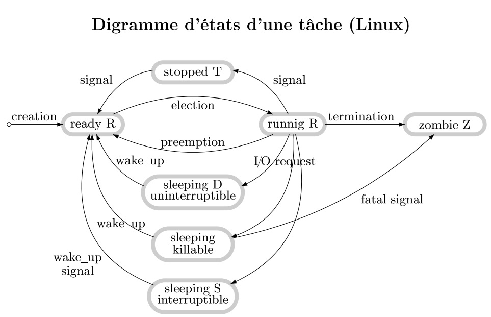
Description des différents états
Voici l'explication détaillée de chaque état présent sur le diagramme
- Ready / Running (R)
- La tâche est soit en cours d'exécution sur un cœur de processeur (Running), soit totalement prête à être exécutée (Ready) et attend simplement que l'ordonnanceur lui attribue du temps CPU (lors d'une élection).
- Sleeping Interruptible (S)
-
C'est l'état de sommeil le plus classique. La tâche est en attente d'une ressource, d'un événement (comme une saisie clavier ou une donnée réseau) ou d'une temporisation (
sleep). Elle peut être réveillée à tout moment par un signal (wake_up). - Sleeping Uninterruptible (D)
-
La tâche est dans un sommeil profond et n'écoute aucun signal (elle ne peut pas être tuée immédiatement via
kill -9). Cet état survient généralement lors d'opérations d'Entrées/Sorties (I/O) directes avec le matériel informatique, par exemple en attendant qu'un secteur de disque dur réponde. - Sleeping Killable
- Similaire à l'état Uninterruptible, ce sommeil est utilisé pour des opérations système bloquantes, mais avec une tolérance : la tâche est configurée pour pouvoir être immédiatement interrompue et détruite si elle reçoit un signal fatal (comme une demande d'arrêt forcé du processus).
- Stopped (T)
-
L'exécution de la tâche a été suspendue manuellement par un signal de contrôle (par exemple en appuyant sur
Ctrl+Zdans le terminal, ce qui envoie le signalSIGTSTP). Elle attend un signal de reprise (SIGCONT) pour repasser à l'état Ready. - Zombie (Z)
-
La tâche a terminé son exécution (termination) et a libéré ses ressources, mais elle reste inscrite dans la table des processus du noyau. Elle attend que son processus parent lise son code de retour (via l'appel système
wait()). Dès que le parent fait cette lecture, le zombie disparaît définitivement du système.
6. L'Ordonnancement des Tâches sous Linux
L'ordonnancement (ou scheduling) est le mécanisme par lequel le noyau Linux décide quelle tâche va s'exécuter sur le processeur (l'UC) à un instant donné, et pendant combien de temps. Imaginez un système de files d'attente à plusieurs niveaux de priorité.
Le Principe : Les Files de Priorité
Le noyau gère un tableau de files d'attente indépendantes :
- Des niveaux de priorité : Chaque file correspond à un niveau de priorité précis. Lors de sa création, une tâche reçoit sa priorité de départ selon sa catégorie.
- Le sens de lecture : L'ordonnanceur parcourt toujours ces files dans l'ordre des numéros croissants (de la plus prioritaire à la moins prioritaire).
- L'élection : Dès que l'ordonnanceur trouve une file qui contient des tâches prêtes (ready), la toute première tâche éligible en tête de file est choisie (on dit qu'elle est élue) pour occuper l'UC.
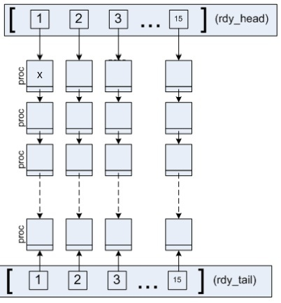
Explications
- Les cases sont non numérotées sont des processus.
- Chaque processus a une priorité. Son numéro de priorité est celui marqué en haut de sa colonne.
- Ainsi, on peut marquer "1" dans toute la première colonne, "2" dans la deuxième, etc...
- La ligne du haut : C'est un tableau de pointeurs. Chaque pointeur pointe vers le premier processus de sa file de priorité, celui juste en-dessous.
- Les colonnes de processus : Tous les processus d'une même colonne ont la même priorité. Le premier processus (celui du haut) est pointé par le tableau rdy_tail. Il descendent, se pointent, sous forme de liste chaînée.
- La ligne du bas : C'est aussi un tableau de pointeurs, qui pointent les derniers processus de chaque file. rdy_tail sert à éviter de parcourir toute la liste chaînée, pour aller plus vite.
- Mécanisme : Le processus avec la croix est sur le point d'être élu. Il va donc disparaître, et le celui du bas prendra sa place. Les priorités de tous les autres processus seront recalculés, et donc il évoluent de droite à gauche, du bas vers le haut pour atteindre la case "X".
Les Règles de Vie d'une Tâche sur le Processeur
Une fois qu'une tâche est élue, elle ne peut pas monopoliser l'UC indéfiniment. Le noyau applique des règles strictes pour partager équitablement le temps de calcul :
- Le Quantum de temps
- Chaque tâche dispose d'un temps d'exécution fixe au compteur appelé quantum. Elle garde l'UC jusqu'à ce que ce temps soit écoulé, sauf si elle est interrompue avant par un appel système ou une interruption matérielle.
- La Préemption
-
Dès que le quantum expire, la tâche est préemptée (on lui retire de force le contrôle du CPU). Sa priorité est alors recalculée et revue à la baisse (elle est punie d'avoir été trop gourmande), puis elle est replacée tout au bout de sa nouvelle file de priorité (vers le
rdy_tail). - Le cas des Entrées/Sorties (E/S)
- Si une tâche libère d'elle-même l'UC parce qu'elle doit attendre une Entrée/Sortie (comme une lecture sur le disque ou une saisie utilisateur), le noyau est indulgent : sa priorité ne change pas. Dès que son E/S est terminée, elle revient dans sa file d'origine sans pénalité.
Spécificités Linux : Les Classes d'Ordonnancement
Linux trie ses tâches dans des catégories spéciales. Les deux premières files du tableau ont des règles du jeu totalement à part, réservées aux processus prioritaires :
| Politique | Description | Avantages | Inconvénients | Exemples / Cas d'usage |
|---|---|---|---|---|
| SCHED_FIFO | Politique temps-réel fixe. La tâche élue s'exécute sans limite de temps jusqu'à ce qu'elle se bloque d'elle-même ou qu'elle cède le processeur. | Aucune perte de temps liée au changement de contexte, réactivité maximale. | Risque majeur de famine : si une tâche a un bug, elle bloque définitivement tout le système. | Tâches systèmes critiques de courte durée, pilotes industriels. |
| SCHED_RR | Politique temps-réel cyclique. Chaque tâche dispose d'un temps fixe (quantum). Si le temps expire, elle est préemptée mais replacée en fin de file. | Équité parfaite entre les tâches de même priorité élevée, pas de blocage complet par une seule tâche. | Légère perte de performance induite par les commutations régulières si le quantum est trop court. | Applications multimédias interactives (traitement audio/vidéo en direct). |
| SCHED_OTHER | Politique standard par défaut sous Linux (temps partagé). Le noyau ajuste constamment les priorités en fonction de l'utilisation des ressources. | Polyvalence totale, protection contre la famine, excellente gestion générale des ressources. | Absolument aucun respect des contraintes de temps-réel (aucune garantie de temps de réponse). | Applications standards : navigateur internet, terminal, programme C. |
ps, ou en allant fouiller directement dans le système de fichiers virtuel du noyau à l'adresse /proc/[PID]/.
7. Les attributs d'un processus
| Attribut | Description |
|---|---|
| PID | Identifie un processus de façon unique. |
| PPID | PID du processus père. |
| UID réel (uid) | Par défaut, correspond à l'UID réel du père sauf après un changement explicite (cf. setuid(2)). |
| UID effectif (euid) | Par défaut, correspond à l'UID effectif du père sauf après un changement explicite ou l'exec d'un fichier avec set-UID à 1. |
| UID sauvegardé (suid) | Par défaut, correspond à l'UID sauvegardé du père sauf après un changement explicite. |
| GID (réel, effectif, sauvegardé) | Identifiants de groupes (gid, egid, sgid), analogues aux trois UID décrits ci-dessus. |
| Groupes supplémentaires | Liste de groupes additionnels auxquels le processus appartient. |
| PGID | Identificateur de groupe de processus. |
| SID | Identificateur de session. |
| Ordonnancement & Priorité | Classe d'ordonnancement, priorité courante et valeur nice associée au processus. |
| Terminal d'attachement | Le terminal de contrôle auquel le processus est lié (s'il y en a un). |
| Descripteurs de fichiers | La table contenant les liens vers tous les fichiers actuellement ouverts par le processus. |
| Répertoires de travail | Le répertoire courant (d'exécution) et le répertoire racine (root) associés au processus. |
| Valeur de umask | Le masque de création de fichiers qui définit les permissions par défaut. |
| Ressources & Signaux | Masque et disposition de signaux, signaux pendants, verrous, sémaphores et segments de mémoire partagés. |
Le mécanisme de sécurité des trois UID (User IDs)
Sous Linux, la sécurité et la gestion des privilèges reposent sur un trio d'identifiants complémentaires associés à chaque processus.
L'UID réel (uid) représente l'identité véritable de l'utilisateur qui a démarré le programme.
L'UID effectif (euid) détermine les droits d'accès réels et actuels du processus face au noyau ; il peut être temporairement modifié (par exemple à 0 pour root) lors de l'exécution d'un fichier doté du bit set-UID comme passwd ou ping.
Enfin, l'UID sauvegardé (suid) fait office de copie de sécurité du privilège initial, permettant au processus d'appliquer le principe du moindre privilège : il peut ainsi abandonner ses droits élevés pour s'exécuter de manière sûre, tout en conservant la possibilité de récupérer son costume de super-utilisateur en cas de besoin absolu au cours de son cycle de vie.
8. Les appels système
| Appel système / Fonction | Type de routine | Description |
|---|---|---|
| clone(2) | Appel système | Cette fonction est propre à Linux. Elle est la racine de fork() et de pthread_create() Dans 99% des cas, on utilisera ce deux fonctions, mais clone() est un outil puissant qui permet de gérer tout les paramètre du clonage. |
| fork(2) | Appel système | L'OS dublique le processus courant. Quand on fait un exec() avec le shell par exemple, le processus appelant est entièrement détruit.
C'est ce qu'il se passe quand on lance une commande sous shell: il fait un fork, de manière à ce que le shell ne soit pas détruit.
|
| pthread_create(3) | Fonction de bibliothèque (API) | À la différence de fork(), le processus fils, le thread, va partager le code, les variables, etc, avec le père, sauf la pile d'exécution. Il permet donc de faire du parallèlisme dans les cas de jeux vidéo, traintement d'image, où les processus doivent partager des données, ou se dispatcher sur plusieurs CPU. |
| exec(2) | Appel système | Chargement d'un nouveau programme dont l'exécution vient se substituer intégralement au processus en cours. |
| brk(2), sbrk(2) | Appels système | Permettent l'extension ou la diminution de la taille de la région des données (le segment de données) du processus. |
| wait(2) | Appel système | Assure la synchronisation du processus père sur la fin (la terminaison) de l'un de ses fils. |
| exit(3) | Fonction de bibliothèque (API) | Provoque la terminaison propre du processus en cours. | Gestion des signaux | Appels système dédiés | Routines de gestion des signaux, notamment kill(2) pour l'envoi, ainsi que signal(2) et sigaction(2) pour leur interception. |
| Communication (IPC) | Appels système dédiés | Outils et routines assurant la communication inter-processus (tubes, segments partagés, etc.). |
Note : (2) = appels système , (3) = fonctions de bibliothèques
Appels systèmes et fonctions de bibliothèques
La différence réside dans qui exécute le code et où il est exécuté
- Appel système : Fonction directement exécutée par le noyau (Ring 0). Le programme utilisateur n'a pas le droit d'accéder directement au matériel (DD, RAM, carte Réseau). Il doit donc passer par un appel système.
- Fonction de bibliothèque : Code pré-écrit qui s'exécute entièrement dans l'espace user (Ring 3).
9. Commandes sur les processus
| Commande | Description |
|---|---|
| ps | Permet de lister des tâches avec certains attributs. |
| top | Affichage dynamique des tâches en cours d'exécution. |
| pstree | Affichage de l'arbre de filiation des processus. |
| strace | Monitoring des appels système d'un processus. |
| vmstat | Affiche les informations sur l'activité en mémoire virtuelle. |
| lsof | Affichage des informations sur les fichiers ouverts par divers processus. |
| fuser | Affichage des informations sur les processus accédant à un fichier. |
| kill | Envoi d'un signal à un processus. |
Exemple de strace avec fprint()
Voici ce que rend la commande strace quand on exécute un programme en C qui se contente de faire un printf()
| Étape de la trace | Appel Système | Description de ce que fait Linux |
|---|---|---|
| Début du programme | execve | Le noyau charge ton exécutable ./printf en mémoire pour lancer le processus. |
| Configuration initiale | brk / mmap | Le système alloue l'espace mémoire de base et charge la bibliothèque C (libc.so.6). |
| Identification | set_tid_address | Le noyau attribue l'identifiant unique (TID 3840) au processus principal. |
| L'exécution du printf | write | La fonction printf passe par le noyau pour écrire les 27 caractères du texte sur le terminal. |
| Fin du programme | exit_group | Le processus se termine proprement en renvoyant le code de succès 0 au système. |
{kind=link}
10. Exclusion mutuelle
1. Le Problème : L'Exclusion Mutuelle
Dans un système concurrent (multi-processus ou multi-threads), certaines ressources ne doivent pas être partagées simultanément. Le cas classique est le problème des Lecteurs et Écrivains :
- Si plusieurs processus écrivent en même temps au même endroit d'un fichier, les données deviennent incohérentes.
- Si un processus lit un fichier pendant qu'un autre y écrit, le résultat de la lecture sera erroné.
Section Critique : C'est la portion de code d'un programme qui accède à une ressource partagée de façon exclusive. L'objectif d'une bonne programmation système est de réduire au maximum la taille et le temps passé dans cette section critique afin de ne pas bloquer les autres processus.
2. Les Solutions d'Accès
Pour contrôler l'accès à une section critique, il existe deux grandes familles de solutions :
- Solutions logicielles : Algorithmes complexes (Dekker, Peterson, la boulangerie de Lamport) qui permettent d'aborder les notions d'interblocages (deadlocks), de famine et d'équité.
- Solutions matérielles : Reposent sur des instructions machines indivisibles appelées appels atomiques. C'est ce qui permet de bâtir les outils comme les sémaphores et les moniteurs.
3. L'Outil : Les Sémaphores
Un sémaphore (noté S) est une variable entière positive partagée. On ne peut la manipuler qu'à travers deux primitives atomiques fondamentales :
| Opération | Action sur le Sémaphore |
|---|---|
| P(S) (ou wait) | Décrémente le sémaphore si sa valeur est > 0. Si la valeur est à 0, le processus appelant est bloqué et mis dans une file d'attente (gérée en FIFO) en attendant qu'elle redevienne positive. |
| V(S) (ou signal/post) | Incrémente le sémaphore. Si un processus attendait dans la file, il est réveillé. |
À la création, une valeur initiale strictement positive est affectée au sémaphore. Elle représente le nombre maximal d'accès simultanés autorisés à la ressource. Si le sémaphore vaut 1, un seul processus pourra y accéder.
Le cas de l'exclusion mutuelle : Pour interdire à plus d'un processus à la fois d'entrer en section critique, on initialise le sémaphore à **1**. Le premier qui fait P(S) passe (le sémaphore tombe à 0), les suivants restent bloqués à l'entrée jusqu'à ce que le premier sorte et fasse V(S).
4. Implémentation sous Linux (Norme POSIX)
En C sous Linux, les opérations théoriques correspondent à des fonctions précises de la bibliothèque standard :
sem_open(3): Permet de créer ou d'ouvrir un sémaphore.sem_wait(3): Équivalent à l'opération de verrouillage/décrémentation P.sem_post(3): Équivalent à l'opération de libération/incrémentation V.
Note : Il existe également une interface historique de plus bas niveau via les appels système direct du noyau : semget(2), semctl(2) et semop(2).
11. Interblocages (deadlock)
Un interblocage se produit lorsque plusieurs processus s’attendent mutuellement. Chaque processus détient une ressource et attend une autre ressource bloquée par un autre processus, ce qui fige complètement l'exécution du programme.
L'exemple classique des 2 processus
Imagine deux processus (A et B) qui ont tous les deux besoin de deux sémaphores (S1 et S_2) pour terminer leur travail :
| Processus A | Processus B |
|---|---|
| P S1 : Il demande l'accès à la sc 1 | P S2 |
| Entre dans la section critique 1 | Entre dans la section critique 2 |
| ...exécute son code | ...exécute son code |
| P S2 : Il demande l'accès à la sc 2 | P S1 |
| ...bloqué : la sc 2 est occupée par le processus B | ...bloqué : la sc 1 est occupée par le processus A |
Situation de blocage total : Le processus A ne relâchera jamais S1 tant qu'il n'aura pas obtenu S2. Le processus B ne relâchera jamais S2 tant qu'il n'aura pas obtenu S1. Le système est figé à jamais.
Les Stratégies de Résolution
Il existe trois grandes approches pour gérer ce problème :
- La prévention (au niveau du programmeur) : Il s’agit de concevoir des stratégies de programmation des processus, comme par exemple imposer une demande ordonnée d'accès aux ressources. Si A et B demandent toujours les sémaphores dans le même ordre ($S_1$ puis $S_2$), l'interblocage devient impossible.
- La détection et reprise (au niveau du noyau) : Le système d'exploitation surveille les blocages et intervient (par exemple en tuant un processus) si un deadlock est détecté. Cette méthode a un coût élevé en ressources.
- L'évitement (au niveau du noyau) : Le noyau analyse dynamiquement chaque demande de ressource pour vérifier si elle risque de mener à un état dangereux. Cela engendre un coût moyen mais une surcharge permanente du système.
Le comportement de Linux : Par défaut, le noyau Linux n’implémente pas ces techniques de détection ou d'évitement au niveau du noyau. C'est donc au programmeur d'être vigilant et d'appliquer de bonnes pratiques de prévention lors de la manipulation des sémaphores.
1. Présentation
Pagination et segmentation
- Pagination : Découpe la mémoire vive en blocs de taille fixe (généralement 4 Ko) appelés cadres de pages Les programmes manipulent des pages de même taille. Cette approche engendre de la fragmentation interne, car la dernière page d'une région n'est souvent pas complètement remplie.
- Segmentation : Découpe la mémoire en morceaux de tailles variables correspondants aux structures logiques du programme. Elle engendre de la fragmentation externe, laissant des espaces vides inutilisables entre les segments si la mémoire n'est pas paginée.
Mémoire virtuelle
Le système crée l'illusion d'un espace mémoire beaucoup plus vaste que la RAM physique disponible. Cela permet à chaque tâche/processus de manipuler un espace d'adressage simple et continu, peu importe l'emplacement réel de ses données dans les cases physiques de la RAM.
Protection de la mémoire
La gestion de la mémoire assure qu'un processus ne peut pas lire, écrire ou exécuter du code en dehors des droits qui lui ont été explicitement attribués pour une zone donnée.
2. La RAM (Random Access Memory)
Les instructions du processeur (chargement, écriture, sauts, pile) font constamment référence à des adresses mémoire. La capacité d'adressage dépend directement de l'architecture du CPU :
- Architecture 32 bits : Le CPU peut adresser un maximum de 4 Go de RAM.
- Architecture 64 bits : La limite théorique grimpe à 16 Exaoctets (soit 1,84 × 1019 octets).
Pourquoi la limite est de 4 Go en 32 bits ?
C'est une pure contrainte logique et matérielle basée sur le calcul mathématique des arrangements avec répétition (les suites de $p$ éléments parmi $n$).
Chaque bit d'adresse possède 2 états possibles (0 ou 1). Un registre de 32 bits permet donc d'obtenir :
232 = 4 294 967 296 combinaisons d'adresses uniques.
Comme le matériel informatique applique un adressage par octet (chaque adresse pointe vers une case de 8 bits), ces 4,29 milliards de combinaisons correspondent exactement à 4 Gigaoctets de mémoire physique qu'il est possible de nommer. Si on adressait la mémoire bit par bit, ces mêmes combinaisons ne permettraient de couvrir que 4 Gigabits (soit à peine 512 Mo de RAM).
Culture G informatique : Repères et Rétrogaming
| Repère historique ou Matériel | Architecture / Date | Capacité ou Précision |
|---|---|---|
| Invention de la RAM moderne (DRAM) | Inventée en 1966 par Robert Dennard chez IBM | La puce initiale d'Intel ne pouvait stocker que 1024 bits (1 Kb). |
| Console NES | Architecture 8 bits (Processeur Ricoh 2A03) |
Une architecture 8 bits génère 28 = 256 adresses de base. Grâce à des extensions, elle gérait 2 Ko de RAM de travail. |
| Amstrad CPC 464 | Architecture 8 bits (Processeur Zilog Z80A) |
Générait des adresses sur 16 bits en interne pour pouvoir adresser ses mythiques 64 Ko de mémoire RAM. 2^16 = 65 536 octets, divisé par 1024 octets = 64 Ko |
3. Les adresses virtuelles
Le concept de Régions sous Linux
Plutôt que d'exposer la mémoire physique directe, Linux découpe l'espace d'un processus en régions.
À l'intérieur d'une région, le programme manipule des adresses virtuelles locales allant de 0 à taille de la région - 1.
Représentation des adresses éloignées
Lorsque les adresses sont éloignées, elles sont structurées et représentées sous la forme d'un couple (r, ar) où :
- r : représente le numéro ou l'identifiant unique de la région entière. Il cible une structure logique complète du processus (ex: Code, Données globales, Pile, Tas).
Le sélecteur r ne peut pas cibler la moitié d'une région, il désigne une frontière stricte. - ar : correspond à l'adresse locale (le déplacement ou offset) calculée à l'intérieur de cette région spécifique. Il commence toujours à
0au début de la région concernée.
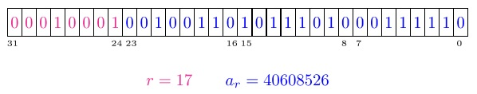
Exemple concret d'application
Imaginons un programme où Linux a défini les identifiants logiques suivants :
- Région 1 : Zone de Code (Text) → Droits : Lecture / Exécution (
r-x). - Région 2 : Zone des Données (Data) → Droits : Lecture / Écriture (
rw-).
Lors de l'exécution, le processeur utilise ces couples pour segmenter ses accès :
- (1, 500) : Pointe vers une instruction située 500 octets après le début de la région Code. Le CPU autorise l'exécution.
- (2, 64) : Pointe vers une variable globale située 64 octets après le début de la région Données. Le CPU autorise la modification de la variable.
Intérêt majeur : La protection de la mémoire
Ce système basé sur le couple (r, ar) sert de fondement à la sécurité. Le système d'exploitation associe des droits d'accès à la région r tout entière.
Si un processus tente une action interdite (par exemple, écrire à l'adresse (1, 500) dans la zone de code), le noyau intercepte immédiatement la requête et lève une exception matérielle de type Segmentation Fault.
4. Création d'une région à partir d'un exécutable
Structure d'un fichier binaire exécutable
Un fichier exécutable sur le disque contient plusieurs informations lues par le noyau pour instancier un processus :
- L'en-tête du fichier : Toujours placé au début, il décrit la structure globale et les attributs du fichier.
- Le Magic Number (la signature): Pour un fichier ELF, les 4 premiers octets sont toujours
0x7F 'E' 'L' 'F' . Linux le reconnaît ainsi. - L'architecture cible: indique si le prog a été compilé pour une UC 32 ou 64bit, et si c'est du x86 ou de l'ARM
- Le point d'entrée: l'adresse exacte où se trouve la première instruction à exécuter
- La table des sections (la structure globale): adresses de la section code, variables globales.
- L'en-tête du programme : Indique au chargeur du noyau
(loader) . Il décrit le processus en mémoire (comment cartographier le fichier dans la RAM) - La table d'en-tête de section : Résume les différentes sections du fichier:
- Son nom :
.text, .data, .bss, etc... - Sa taille en octet.
- Sa position (offset) dans le fichier.
- Son type (code, données initialisées, etc....)
- Les sections : Contiennent les sections en elle-même:
.text, .data, .bss... .
Note : Des outils commeobjdumpetreadelfpermettent d'explorer et de désassembler ces structures.
Détail des fichiers
Adresses virtuelles dans l'exécutable & Chargement
Pour structurer la mémoire virtuelle, le système utilise un adressage sous forme de couple (r, ar) :
- r (Région) : Représente le numéro de la région cible (le « bâtiment » en mémoire, ex: text, data, stack).
- ar (Adresse interne) : Représente le déplacement ou l'offset exact à l'intérieur de cette région spécifique (la « chambre » dans ce bâtiment).
Lors de la compilation et de l'édition des liens, les futures régions standards (text, data, BSS, stack, heap) sont indispensables et connues à l'avance. Leurs adresses internes sont donc directement codées « en dur » sous la forme (r, ar) dans le fichier exécutable.
En revanche, les zones qui n'apparaissent qu'en cours de route (bibliothèques dynamiques comme la libc, segments de mémoire partagée, projections mmap) ne peuvent pas être localisées à l'avance. Elles sont simplement notées sous forme symbolique (une étiquette temporaire).
Lors de l'appel système exec, le noyau Linux initialise la table des régions en créant uniquement les régions standards prévues et démarre le processus.
Création d'une région à proprement parler (Dynamique)
Si le processus rencontre une référence symbolique lors de son exécution (ex: premier appel à printf dans une bibliothèque dynamique) ou s'il fait un appel système explicite (mmap, shmget), une nouvelle région doit être créée à la volée :
- Allocation dans la table : Le noyau Linux ajoute une nouvelle ligne à l'indice rmax (le nombre actuel de régions actives) dans la table des régions du processus.
-
Incrémentation de l'indice : Le pointeur de limite globale est mis à jour dans le noyau :
rmax ← rmax + 1 - Résolution de l'adresse : Le noyau charge physiquement la ressource en RAM, met à jour sa table globale, et remplace définitivement la référence symbolique temporaire (l'étiquette) par le couple physique (r, ar) nouvellement créé.
Note : Les appels suivants vers cette ressource n'auront plus besoin de solliciter le noyau ; le processus utilisera directement le couple (r, ar) désormais enregistré.
5. Traduction d'adresse et MMU
En combinant la structure de l'en-tête ELF (qui définit les régions logiques) et le mécanisme de pagination du noyau, le processeur via la MMU (Memory Management Unit) traduit en temps réel chaque accès mémoire du programme.
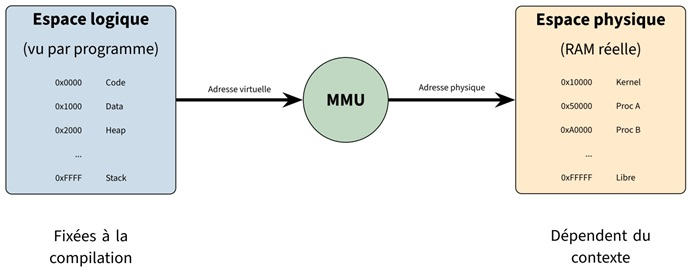
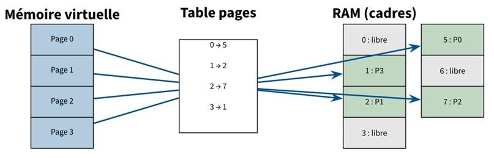
Définitions
- La mémoire vive est divisée en morceaux de même taille (4K par défaut) et appelés cadres de page
- Un cadre de page occupé contient une page
- Les pages entière sont tranférées entre la RAM et les périphériques (HDD, SSD, Carte réseau) via le contrôleur DMA
Rappel et Zoom
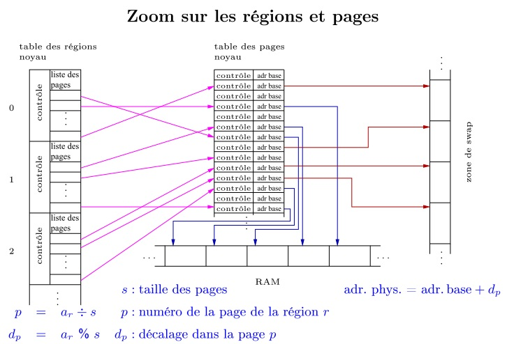
Le Mécanisme de base
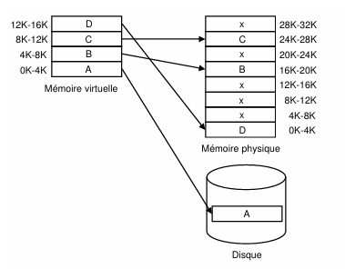
Le programme compilé est stocké sur le disque, sous forme d'adresses virtuelles. La toute première image pourrait être le disque contenant
- Etape 1 : Démarrage
- Le prog veut exécuter la première instruction, qui se trouve dans la page
A . - Il regarge la table des pages: "tient elle n'y est pas, défaut de page".
- Le noyau intervient, fait une entrée/sortie (E/S) sur le disque, et copie la page A dans la RAM.
- Etape 2 : Le programme avance
- Même scénario : deux nouveaux défauts de page.
- Le noyau charge les pages
B et C dans des cases vides de la RAM.
Un peu plus tard, ton code a besoin de lire une variable globale
- Etape 3 : La RAM commence à être pleine
- Même scénario : deux nouveaux défauts de page.
- Le noyau charge les pages
B et C dans des cases vides de la RAM.
Le système a maintenant besoin de place pour un autre programme. Le noyau remarque que la page A (le démarrage) n'a pas été utilisée depuis longtemps..
Le Mécanisme entre l'UC et la MMU
Imaginons que l'UC traite un processus, et le code lui dit d'aller prendre la valeur qui est à l'adresse virtuelle
- Etape 1 : L'UC passe commande à la MMU.
- L'UC dit à la MMU :
"Traduis-moi l'adresse virtuelle 12510".
- Etape 2 : La MMU traduit l'adresse.
- La mémoire (RAM et DD) étant divisée en pages de 4Ko, quel est le numéro de page ?
- 👉 On divise
12510 par4Ko : 12510 / 4000 = 3127.5. L'adresse virtuelle est donc en page1327. - 👉 On calcule le décalage dans cette page avec modulo, le reste de la division: 12510 % 4000 = 510.
- La donnée se trouve à la page
1327 avec un offet de510 . ✅
- Etape 3 : La MMU interroge la Table des Pages.
- Cas 1 : La page A est en RAM
- La MMU lit la ligne de la page A dans table des pages. Elle voit le bit de contrôle
Présent =1 , la page est en RAM. - Elle récupère l'adresse de base physique de la RAM :
16 000K. - La MMU faire l'addition: Adresse physique = 16 000 + 510 =
16 510. - La MMU renvoie l'adresse
16 510 à l'UC. Le CPU accède à la RAM en quelques nanosecondes. - Cas 2 : La page A n'est pas en RAM
- La MMU lit la ligne de la page A dans table des pages. Elle voit le bit de contrôle
Présent =0 , la page n'est pas en RAM: l'adresse pointe vers le DD. - La MMU est bloquée: elle ne peut pas lire la valeur de cette adresse sur le DD
- Elle déclenche une alerte matérielle: un défaut de page (Page Fault)
- La MMU renvoie l'adresse
16 510 à l'UC. Le CPU accède à la RAM en quelques nanosecondes - Sur défaut de page, le noyau prend le relais
- L'UC s'arrête et met le processus en bloqué.
- Le noyau Linux prendre les commandes du CPU : il trouve une case de libre en RAM.
- Il ordonne au contrôleur DMA de transférer la page A du DD à la RAM.
- Quand le transfert est fini, le noyau modifie la table des pages:
Présent = 1. - Le noyau réveille le processus.
La MMU va regarder la ligne numéro 1327 (la page A) dans la table des pages du processus actuel.
C'est ici que le destin du processus bascule selon les deux cas :
- Supposons que cette page est en RAM à l'adresse 16 000K - 20 000K :
6. Défauts de page, Zone de Swap et Algorithmes de Remplacement
La mémoire virtuelle permet d'exécuter des programmes dont la taille combinée dépasse la capacité physique de la RAM. Cependant, ce mécanisme repose sur la gestion fine des interruptions et du stockage secondaire.
1. Qu'est-ce qu'un défaut de page (Page Fault) ?
Un Page Fault est une interruption matérielle déclenchée par la MMU lorsque le processeur tente d'accéder à une adresse virtuelle dont la page correspondante n'est pas immédiatement disponible ou exploitable en RAM. On distingue quatre scénarios :
- Demand Paging (Pagination à la demande) : La page demandée est légitime et définie dans une région, mais elle n'est pas en RAM car elle a été transférée sur le disque dans la zone de swap (ou n'a pas encore été chargée). C'est un défaut de page mineur ou majeur standard.
-
Copy on Write (COW - Copie sur écriture) : Survient lorsqu'un processus tente d'écrire dans une page partagée configurée temporairement en lecture seule (fréquent après un
fork()). Le noyau intercepte l'appel, duplique la page en RAM pour donner sa propre copie privée au processus, puis autorise l'écriture. -
Segmentation Fault (Violation de droits) : Le processus tente une action illégale sur une page présente en mémoire (par exemple, tenter d'écrire des données dans la section
.textde code qui est strictement configurée en Read-Only). Le noyau lève une erreur et tue généralement le processus. - Segmentation Fault (Hors zone) : Le processus tente d'accéder à une adresse virtuelle qui ne correspond à aucune des régions définies dans ses en-têtes de programme ELF. L'accès est illégitime, provoquant le plantage du programme.
2. Gestion du Swap (Swap-in & Swap-out)
Lorsqu'un défaut de page lié au Demand Paging survient, le noyau doit restaurer la page en mémoire physique. Ce mécanisme utilise le contrôleur DMA (Direct Memory Access) pour ne pas surcharger le processeur :
- Le Swap-in : Le noyau va chercher la page manquante sur le disque et la rapatrie en RAM. Si un cadre de page (page frame) est libre en RAM, l'opération est directe.
- Le Swap-out : Si la RAM est totalement saturée, le noyau doit libérer de l'espace. Il choisit un cadre de page actif, copie son contenu sur le disque dans la zone de swap pour le vider, met à jour la table des pages du processus concerné, puis effectue le Swap-in de la nouvelle page dans le cadre ainsi libéré.
3. Algorithmes de remplacement de page
Pour optimiser le Swap-out et éviter le phénomène de thrashing (où le système passe son temps à swapper au détriment de l'exécution du code), le noyau applique des politiques de remplacement pour choisir la page à sacrifier :
| Algorithme | Principe de fonctionnement | Efficacité / Utilisation |
|---|---|---|
| LRU (Least Recently Used) |
Éjecte la page qui n'a pas été consultée depuis la plus longue période de temps. Se base sur le principe de localité temporelle. | Très performant, le standard conceptuel des OS modernes. Mais risque de famine (starvation) |
| FIFO (First In, First Out) |
Éjecte la plus ancienne page chargée en RAM, sans prendre en compte sa fréquence ou sa récence d'utilisation réelle. | Peu performant (sensible à l'anomalie de Belady). Risque de trash. |
| LFU (Least Frequently Used) |
Compte le nombre d'accès à chaque page et supprime celle qui possède le compteur d'utilisation le plus bas. | Utile pour certains patterns, mais peut stagner si de vieilles pages ne servent plus. |
| ARC / LRU-2 (Adaptive Replacement Cache) |
Variantes avancées qui s'ajustent dynamiquement en combinant à la fois la récence (LRU) et la fréquence (LFU) des accès. | Haute performance, utilisé dans les systèmes de fichiers et caches modernes. |
| Algorithme Optimal | Modèle théorique qui remplace la page qui ne sera pas consultée pendant la plus longue période dans le futur. | Impossible à implémenter (nécessite de prédire l'avenir), sert uniquement de jalon de référence pour les benchmarks. |
1. Les Systèmes de Fichiers (File Systems)
Le système de fichiers assure la transition entre la vision logique de l'utilisateur (arborescence, répertoires, fichiers nommés) et la gestion matérielle du noyau sur les blocs physiques de la mémoire de masse (disques durs, SSD).
UNIX est le modèle architectural historique et propriétaire.
1. UNIX : Le système fondateur (Années 1970)
Créé aux laboratoires Bell d'AT&T par des pionniers comme Ken Thompson et Dennis Ritchie (le créateur du langage C), UNIX n'est pas juste un OS, c'est une philosophie d'architecture :
- Le principe fondamental : Écrire des programmes simples, qui ne font qu'une seule chose, mais qui la font parfaitement bien, et qui communiquent entre eux via des flux de texte (les fameux tubes/pipes).
- La marque de fabrique : C'est sous UNIX que sont nés les concepts fondamentaux (la séparation stricte processus/noyau, l'arborescence globale, les inodes, etc.).
- Aujourd'hui : UNIX est devenu une marque et une spécification de normes très strictes (la certification POSIX). Les systèmes officiellement certifiés "UNIX" sont rares et souvent commerciaux (comme macOS d'Apple, ou AIX d'IBM).
Linux est une implémentation moderne, libre, gratuite et open-source qui respecte la philosophie et le comportement d'UNIX. On dit que Linux est un système UNIX-like (de type UNIX).
2. Linux : Le clone libre et moderne (1991)
Au début des années 90, UNIX était devenu cher, propriétaire et fermé. Linus Torvalds, alors étudiant, a décidé de réécrire un noyau à partir de zéro, en se basant sur le comportement d'UNIX mais sans en copier le code.
- Un noyau, pas un OS complet : Techniquement, Linux désigne uniquement le noyau (le Kernel). Pour faire un système d'exploitation complet, on l'associe aux outils système du projet GNU (d'où le nom rigoureux GNU/Linux).
- Open-Source et Gratuit : Contrairement à l'UNIX historique, Linux est libre. N'importe qui peut regarder son code, le modifier et le distribuer.
- Sous le capot : Il est conçu pour réagir exactement comme UNIX. Un développeur C ou un administrateur système tape exactement les mêmes commandes (
ls,cd,fork(),open()) sur un système UNIX et sur un système Linux.
Cinq Systèmes de Fichiers
| Système de Fichiers | Architecture & Spécificités Académiques | Limites / Évolutions |
|---|---|---|
| FAT (File Allocation Table) |
Pas d'inodes. Tout repose sur une table d'indexation unique située au début de la partition qui liste le chaînage des blocs physiques. | Aucune gestion des droits/permissions, forte fragmentation, et limites de taille historiques (ex: 4 Go maximum par fichier pour FAT32). |
| UFS (Unix File System) |
Le modèle théorique Unix. Introduit la séparation stricte entre les données (blocs de stockage) et les métadonnées (via la structure d'inode). Indexation des blocs multiniveaux (directs et indirects simples, doubles, triples). | Modèle fondateur qui sert de socle architectural à la quasi-totalité des systèmes de fichiers sous Linux et BSD. |
| Lignée Ext (Ext2 → Ext3 → Ext4) |
Le standard natif de Linux.
|
Ext2 nécessitait un scan complet (fsck) très lent après chaque coupure brutale.
Ext4 résout la fragmentation des gros fichiers grâce aux plages de blocs contigus. |
| NTFS (New Technology FS) |
Le standard moderne de Windows. Système propriétaire intégrant nativement le journalisme, la compression à la volée, et la gestion des listes de contrôle d'accès complexes (ACL) pour la sécurité. | Performant et sécurisé, il a définitivement remplacé l'architecture FAT pour les systèmes d'exploitation Windows modernes. |
| Btrfs / ZFS | La nouvelle génération de systèmes de fichiers. Conçus pour les serveurs et le stockage à très grande échelle. Reposent sur le mécanisme du Copy-on-Write (CoW). | Permettent la création quasi instantanée de snapshots (instantanés du système pour la sauvegarde) sans figer ni ralentir les entrées/sorties. |
Les 3 Concepts Théoriques Fondamentaux
L'inode (Index-Node)
C'est la structure de données centrale du système de fichiers Unix. L'inode constitue la carte d'identité unique d'un fichier. **Attention : un inode ne contient jamais le nom du fichier** (le nom est stocké uniquement dans les blocs de données du répertoire parent). Un inode contient :
- Les métadonnées (taille en octets, UID/GID du propriétaire, droits d'accès RWX, horodatages).
- La table de pointeurs pointant directement ou indirectement vers les numéros de blocs physiques sur le disque.
Le journaling
Mécanisme de tolérance aux pannes. Avant d'appliquer une modification structurelle sur les blocs de données ou les inodes, le noyau consigne son intention d'écriture dans une zone circulaire dédiée nommée le journal.
- Si une coupure de courant survient au milieu de l'écriture, le système ne subit pas d'incohérence logicielle.
- Au redémarrage, le noyau vérifie le journal : il valide la transaction incomplète si toutes les données y sont présentes, ou l'annule proprement (rollback), évitant un scan complet du volume.
Les Extents (Plages de blocs contigus)
Technique moderne d'allocation de blocs (utilisée par Ext4). Au lieu de lister individuellement des milliers d'adresses de blocs dans l'inode pour un seul fichier volumineux, un extent définit une plage sous la forme d'un couple : [Adresse du bloc de départ ; Nombre de blocs consécutifs]. Cela réduit drastiquement la taille de l'inode et la fragmentation sur le disque.
2. Types de fichiers
Sous Unix et Linux, le système applique le grand principe fondateur : "Tout est fichier". Un fichier est une abstraction logique gérée par le système d'exploitation pour manipuler des données ou interagir avec le matériel.
Qu'est-ce qu'un fichier sous Unix/Linux ?
Selon le modèle Unix, un fichier se caractérise par les éléments suivants :
- Un nom ou un chemin d'accès : Il permet à l'utilisateur d'identifier et de localiser logiquement le fichier dans l'arborescence.
- Un unique inode (inode) : C'est la structure interne qui contient toutes les métadonnées essentielles (le type de fichier, les droits d'accès, la taille, etc.), à l'exception de son nom.
-
Un ensemble de fonctionnalités système fondamentales : L'accès à tout fichier repose sur quatre primitives système de base :
l'ouverture (
open ), la fermeture (close ), la lecture ou consultation (read ), et l'écriture ou modification (write ).
La typologie des fichiers (Les 7 types)
Lorsque l'on effectue une commande
| Caractère | Type de Fichier | Description et Rôle Système |
|---|---|---|
- |
Fichier ordinaire | Contient des données classiques utilisateur (texte source, fichiers binaires compilés, images). |
d |
Répertoire (Directory) | Fichier spécial contenant une liste de couples [Nom de fichier, Numéro d'inode] servant à structurer l'arborescence. |
l |
Lien symbolique | Un raccourci contenant le chemin textuel vers un autre fichier ou répertoire. |
s |
Socket | Pseudo-fichier réseau permettant une communication bidirectionnelle entre deux processus distincts (locaux ou distants). |
p |
Tube nommé (Named Pipe / FIFO) | Pseudo-fichier de communication inter-processus local fonctionnant selon le principe du Premier Entré, Premier Sorti. |
c |
Fichier de type caractère | Pseudo-fichier d'interface pour les périphériques matériels qui transmettent les données flux par flux, caractère par caractère (ex: terminaux, clavier, souris). |
b |
Fichier de type bloc | Pseudo-fichier d'interface pour les périphériques matériels stockant et lisant les données par blocs entiers adressables via des caches (ex: disques durs, partitions, clés USB). |
Fichier Ordinaire (-)
Un fichier ordinaire est caractérisé de manière brute par son contenu, perçu par le système comme une simple suite continue d'octets (ou de caractères) sans structure interne imposée par le noyau.
Lorsqu'un processus ouvre un fichier ordinaire, le noyau lui associe un pointeur de fichier (offset) qui repère la position courante pour la prochaine opération de lecture ou d'écriture.
Un processus peut ouvrir plusieurs fois le même fichier, et plusieurs processus peuvent ouvrir le même fichier. Chaque ouverture reçoit son propre descripteur de fichier, et pointeur indépendant.
Par contre
Des fonctionnalités supplémentaires permettent de manipuler ce flux d'octets :
-
Le positionnement du pointeur de fichier : Grâce à la primitive
lseek() , un processus peut déplacer son pointeur à n'importe quel octet du fichier pour réaliser des accès directs non séquentiels. - L'écriture en fin de fichier : Une opération d'écriture effectuée à la position finale courante a pour conséquence directe l'extension de la taille du fichier, entraînant l'allocation de nouveaux blocs physiques sur le disque par le noyau.
3. Inodes et table des inodes
Un inode est une structure de données interne utilisée par les systèmes de fichiers de type Unix/Linux (comme ext2, ext3, ext4 ou UFS) pour représenter un fichier ou un répertoire.
Chaque fichier possède un unique inode, identifié par un numéro entier unique dans le système de fichiers.
L'inode fait
L'inode est situé au début du disque dur, à la suite des autres inodes, ainsi tous les fichiers sont répertoriés de cette manière. Cette table est appelée table des inodes.
Règles d'or de l'inode :
- Tout fichier possède son unique inode.
- L'inode d'un fichier contient la totalité des informations et métadonnées sur le fichier hormis son nom.
- Les inodes d'un même système de fichiers sont tous de même taille.
Structure et Métadonnées d'un inode
Les métadonnées contistuent la première partie de l'inode:
- Type de fichier : Permet d'identifier s'il s'agit d'un fichier ordinaire (
-), répertoire (d), lien (l), socket (s), tube (p), ou périphérique (c,b). - Droits d'accès : Les permissions de lecture, écriture, exécution pour les trois catégories d'utilisateurs (ex:
rwxr-x--). - Nombre de liens (physiques) : Le nombre de références ou de noms pointant vers cet inode unique.
- UID (User ID) : L'identifiant effectif du propriétaire (processus créateur ou modifié via
chown). - GID (Group ID) : L'identifiant effectif du groupe associé (processus créateur, hérité ou modifié via
chgrp). - Taille du fichier : Exprimée de manière brute en octets.
- Horodatages (Timestamps) :
atime: Date de dernière consultation (lecture) du contenu du fichier.mtime: Date de dernière modification (écriture) du contenu du fichier.ctime: Date de dernière modification de la structure même de l'inode.
- Adresses : La liste fixe contenant les adresses des blocs physiques stockant les données sur le disque.
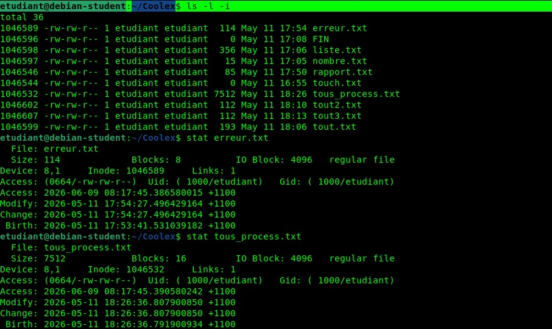
L'Adressage des Blocs de Données (Système d'indirection)
C'est dans la seconde partie de l'indode que l'on trouve les adresses des données.
L'inode ne contient pas directement les données du fichier, mais une liste de n adresses
(n étant fixe et dépendant du type de système de fichiers, typiquement n = 13 sur systèmes ext2 et ext3).
Pour optimiser l'espace tout en permettant le stockage de très gros fichiers, Unix utilise un mécanisme d'indirection hiérarchique :
| Entrées dans l'inode | Type d'adressage | Description du mécanisme de pointage |
|---|---|---|
| Les 10 adresses directes : bloc 0 à 9 | Adressage Direct | Les adresses pointent directement vers des blocs physiques contenant les données brutes utilisateur. C'est ultra-rapide pour les petits fichiers. |
| 1 adresse indirecte : bloc 10 | Adressage Indirect Simple | L'adresse pointe vers un bloc intermédiaire (sur le disque) qui ne contient pas de données, mais uniquement une liste d'adresses pointant vers les blocs de données finaux. |
| 1 adresse indirecte double : bloc 11 | Indirection Double | Pointe vers un bloc d'adresses, qui pointent chacun à leur tour vers d'autres blocs d'adresses, qui pointent enfin vers les blocs de données (2 niveaux d'indirection). |
| 1 adresse indirecte triple : bloc 12 | Indirection Triple | Mécanisme à 3 niveaux d'indirection utilisé pour cartographier les fichiers volumineux qui dépassent les capacités des niveaux inférieurs. |
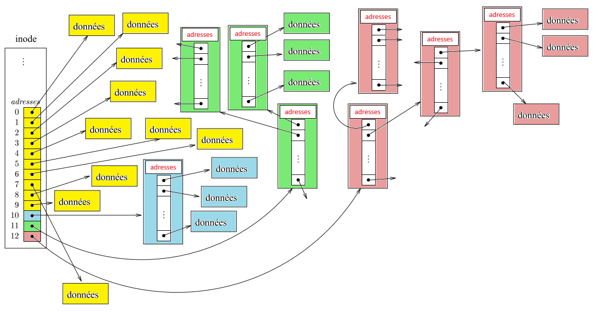
- Explications
- En jaune, nous avons les 10 premières adresses directes (0 à 9).
La première adresse, contenue dans la case 0, pointe le tout début du fichier.
Le disque dur étant divisé en blocs du 4Ko, la seconde adresse pointele début du fichier + 4Ko.
Ainsi, si un ficher fait 12Ko, il sera divisé en 3 blocs de 4 Ko. Et donc les 3 premières adresses pointeront ces trois parties, c'est à dire l'intégralité des données du fichier.
Avec 10 adresses directes, on peut pointer l'intégralité des données d'un fichier de 40 Ko. (10 blocs * 40Ko). - En bleu, une adresse indirecte. Elle ne pointe pas une donnée, mais un bloc de 4Ko sur le disque qui contient d'autres adresses.
Une adresse est codée sur 4 octets (32bits). Donc dans le bloc bleu de 4Ko, on a4096 octets / 4 octets = 1024 adresses.
Avec1024 adresses , on peut adresser un fichier de1024 * 4Ko = 4096 kilo-octects (4Mo). -
En vert, le principe est le même mais le premier bloc vert ne va pas pointer des données, mais vers d'autres blocs d'adresses.
Ainsi, chaque ligne du premier bloc pointe un autre bloc vert de 4Ko, qui contient de 1024 adresses. Ce deuxième bloc pointe ensuite les données.
Comme il y a 1024 lignes dans le premier bloc, il pointe1024 blocs qui ont eux-même1024 lignes.
On a donc à ce niveau1024 x 1024 = 1 048 576 d'adresses .
Ce système à deux adresses à la suite s'appelle le double adressage indirect.
Au final comme on a1 048 576 adresses , on peut adresser chaque blocs de 4Ko d'un fichier qui a pour taille totale1 048 576 x 4Ko = 4 194 304 Ko (4Go)